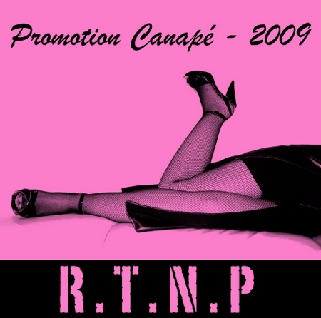

Pour ceux qui ne connaissent pas encore le concept, la Zombie Walk c’est une foule de passionnés de films d’horreur et spécialement de (oh surprise !) zombies qui se déguisent et déambulent dans les rues. Rien n’est défini ancore pour 2010 mais la page d’inscription est déjà disponible.
Pour ceux qui ne connaissent pas encore le concept, la Zombie Walk c’est une foule de passionnés de films d’horreur et spécialement de (oh surprise !) zombies qui se déguisent et déambulent dans les rues. Rien n’est défini ancore pour 2010 mais la page d’inscription est déjà disponible.
Alors zombie de tous poils : inscrivez-vous !
Si vous n’avez pas de costume, il est possible de payer quelques euros pour se faire maquiller sur place. Donc plus d’excuses !
Pour vous donner une idée de l’ambiance, allez faire un tour sur le groupe Flickr dédié.
Catégories : Nouvelles | Commentaires (2)
Vous le saviez propablement , mais en fait Zombie Now est le premier morceau de RTNP, c’est par ce morceau que l’on sent le mieux l’esprit du groupe.
C’est quand même la 3eme version, et elle n’est toujours pas définitive. Pour la petite histoire, ce morceau a été oublié lors de notre enregistrement au studio « La villa des Fleurs » à Mantes la Jolie. L’énorme boulette… Mais peut être que ça nous aura laissé le temps de le mûrir encore.
Initialement Mag jouait la mélodie au piano, mais au fur et à mesure que le temps a passé, ce morceau a beaucoup changé et donc la melodie original n’allait plus.
C’est donc une mélodie faite par Mimi (aux belles jambes) et Tuxa qui a pris le relais dans cette version.
Lire la suite »
Catégories : Nouvelles, Pleine Gueule 2010, Son | Commentaire (0)
110 bpm
Deux as dans la main et un autre sur la table
Ce coup là s’annonce bien, ça va être mémorable
Si tu la joue bien fine, tu va lui faire les poches !
A sec à la barre à mine ! Putain ça va être moche !
Le poker zombie, ça dure toute la nuit.
au poker zombie, au moins tu joue pas ta vie.
au poker zombie, tu peux pas t’arrêter !
au poker zombie, t’es prêt à tout miser !!
Lire la suite »
Catégories : Promotion Canapé 2009, Textes | Commentaire (0)


{kind=link}